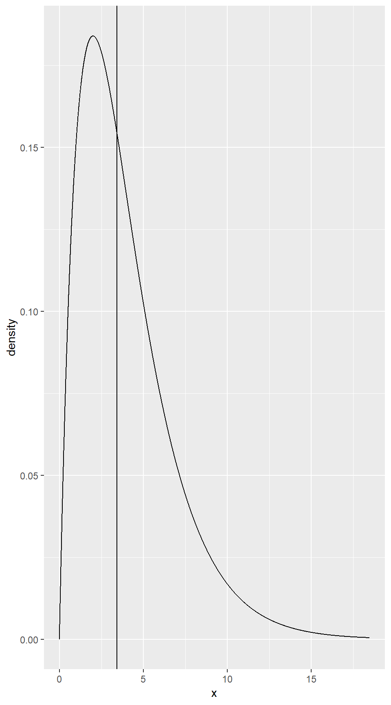

7 Chi-Squared Tests for Categorical Variables
Goodness of fit tests test how well a distribution fits some hypothesis.
7.1 Testing Goodness-of-Fit for a Single Categorical Variable
Example 7.1
tally(~Answer, format = "proportion", data = APMultipleChoice)## Answer
## A B C D E
## 0.2125 0.2250 0.1975 0.1950 0.1700Chi-square Statistic
The Chi-squared test statistic: \[ \chi^2 = \sum \frac{(\mbox{observed} - \mbox{expected})^2 }{ \mbox{expected} } \] There is one term in this sum for each cell in our data table, and
observed \(=\) the tally in that cell (a count from our raw data)
expected \(=\) the number we would “expect” if the percentages followed our null hypothesis exactly. (Note: the expected counts might not be whole numbers.)
Example 7.5
You could calculate the chi-square statistic manually but of course, R can automate this whole process for us if we provide the data table and the null hypothesis. Notice that to use chisq.test(), you must enter the data like answer <- c(85, 90, 79, 78, 68). The default null hypothesis is that all the probabilities are equal.
head(APMultipleChoice)## Answer
## 1 B
## 2 B
## 3 D
## 4 A
## 5 E
## 6 Danswer <- c(85, 90, 79, 78, 68)
chisq.test(answer)##
## Chi-squared test for given probabilities
##
## data: answer
## X-squared = 3.425, df = 4, p-value = 0.4894Chi-square Distribution
The chisq() function can be used to calculate a chi-squared statistic from one
of three kinds of input: from the result of chisq.test(), from a table of counts, as
produced by tally(), or from a formula and data frame that could have been the input
to tally().
chisq(sex ~ substance, data = HELPrct)## X.squared
## 2.026361chisq(tally(sex ~ substance, data = HELPrct))## X.squared
## 2.026361chisq(chisq.test(tally(sex ~ substance, data = HELPrct)))## X.squared
## 2.026361Figure 7.2
chisq.sample <- do(1000) * chisq( ~ resample(toupper(letters[1:5]), 400))
gf_dhistogram(~X.squared, bins = 11, data = chisq.sample)Figure 7.3
gf_dist("chisq", params = list(df = 4), lty = 1) %>%
gf_vline(xintercept = 3.425)
Our test statistic will be large when the observed counts and expected counts are quite different. It will be small when the observed counts and expected counts are quite close. So we will reject when the test statistic is large. To know how large is large enough, we need to know the sampling distribution.
If \(H_0\) is true and the sample is large enough, then the sampling distribution for the Chi-squared test statistic will be approximately a Chi-squared distribution.
The degrees of freedom for this type of goodness of fit test is one less than the number of cells.
The approximation gets better and better as the sample size gets larger.
The mean of a Chi-squared distribution is equal to its degrees of freedom. This can help us get a rough idea about whether our test statistic is unusually large or not.
Example 7.6
\(H_0\): \(p_w= 0.54\), \(p_b= 0.18\), \(p_h= 0.12\), \(p_a= 0.15\), \(p_o= 0.01\);
\(H_a\): At least one \(p_i\) is not as specified.
Observed count: \(w=780\), \(b=117\), \(h=114\), \(a=384\), \(o=58\)
Chi-squared test:
jury <- c(780, 117, 114, 384, 58)
chisq.test(jury, p = c(.54, .18, .12, .15, .01))##
## Chi-squared test for given probabilities
##
## data: jury
## X-squared = 357.36, df = 4, p-value < 2.2e-16xchisq.test(jury, p = c(.54, .18, .12, .15, .01)) # to list expected counts##
## Chi-squared test for given probabilities
##
## data: x
## X-squared = 357.36, df = 4, p-value < 2.2e-16
##
## 780.00 117.00 114.00 384.00 58.00
## (784.62) (261.54) (174.36) (217.95) ( 14.53)
## [ 0.027] [ 79.880] [ 20.895] [126.509] [130.051]
## <-0.16> <-8.94> <-4.57> <11.25> <11.40>
##
## key:
## observed
## (expected)
## [contribution to X-squared]
## <Pearson residual>Notice in this example, we need to tell R what the null hypothesis is.
How unusual is it to get a test statistic at least as large as ours? We compare to a Chi-squared distribution with 4 degrees of freedom. The mean value of such a statistic is 4, and our test statistic is much larger, so we anticipate that our value is extremely unusual.
Goodness-of-Fit for Two Categories
When there are only two categories, the Chi-squared goodeness of fit test is equivalent to the 1-proportion test. Notice that prop.test() uses the count in one category and total but that chisq.test() uses cell counts.
Example 7.8
prop.test(84, 200)##
## 1-sample proportions test with continuity correction
##
## data: 84 out of 200
## X-squared = 4.805, df = 1, p-value = 0.02838
## alternative hypothesis: true p is not equal to 0.5
## 95 percent confidence interval:
## 0.3513385 0.4917858
## sample estimates:
## p
## 0.42chisq.test(c(84, 116), p = c(.5, .5))##
## Chi-squared test for given probabilities
##
## data: c(84, 116)
## X-squared = 5.12, df = 1, p-value = 0.02365binom.test(84, 200)##
##
##
## data: 84 out of 200
## number of successes = 84, number of trials = 200, p-value =
## 0.02813
## alternative hypothesis: true probability of success is not equal to 0.5
## 95 percent confidence interval:
## 0.3507439 0.4916638
## sample estimates:
## probability of success
## 0.42Although all three tests test the same hypotheses and give similar p-values (in this example), the binomial test is generally used because #. The binomial test is exact for all sample sizes while the Chi-squared test and 1-proportion test are only approximate, and the approximation is poor when sample sizes are small. #. The binomial test and 1-proportion test also produce confidence intervals.
7.2 Testing for an Association Between Two Categorical Variables
Example 7.9
OneTrueLove <- read.file("OneTrueLove.csv")## Reading data with read.csv()tally(~Response, format = "proportion", data = OneTrueLove)## Response
## Agree Disagree Don't know
## 0.28000000 0.69028571 0.02971429tally(~ Response + Gender, format = "proportion", margin = TRUE, data = OneTrueLove)## Gender
## Response Female Male Total
## Agree 0.13828571 0.14171429 0.28000000
## Disagree 0.38285714 0.30742857 0.69028571
## Don't know 0.01676190 0.01295238 0.02971429
## Total 0.53790476 0.46209524 1.00000000Figure 7.4
gf_bar(~Response|Gender, data = OneTrueLove)Chi-square Test for Association
Example 7.10
head(WaterTaste, 3)## Gender Age Class UsuallyDrink FavBotWatBrand Preference First Second
## 1 F 18 F Filtered DEER PARK CABD Fiji SamsChoice
## 2 F 18 F Tap NONE CABD Fiji SamsChoice
## 3 F 18 F Tap DEER PARK CADB Fiji SamsChoice
## Third Fourth Sex
## 1 Aquafina Tap Female
## 2 Aquafina Tap Female
## 3 Tap Aquafina Femalewater <- tally(~UsuallyDrink + First, data = WaterTaste); water## First
## UsuallyDrink Aquafina Fiji SamsChoice Tap
## Bottled 14 15 8 4
## Filtered 4 10 9 3
## Tap 7 16 7 3water <- rbind(c(14, 15, 8, 4), c(11, 26, 16, 6)) # to combine Tap and Filtered
water## [,1] [,2] [,3] [,4]
## [1,] 14 15 8 4
## [2,] 11 26 16 6colnames(water) <- c('Aquafina', 'Fiji', 'SamsChoice', 'Tap') # add column names
rownames(water) <- c('Bottled', 'Tap/Filtered') # add row names
water## Aquafina Fiji SamsChoice Tap
## Bottled 14 15 8 4
## Tap/Filtered 11 26 16 6xchisq.test(water)##
## Pearson's Chi-squared test
##
## data: x
## X-squared = 3.243, df = 3, p-value = 0.3557
##
## 14.00 15.00 8.00 4.00
## (10.25) (16.81) ( 9.84) ( 4.10)
## [1.3720] [0.1949] [0.3441] [0.0024]
## < 1.171> <-0.441> <-0.587> <-0.049>
##
## 11.00 26.00 16.00 6.00
## (14.75) (24.19) (14.16) ( 5.90)
## [0.9534] [0.1354] [0.2391] [0.0017]
## <-0.976> < 0.368> < 0.489> < 0.041>
##
## key:
## observed
## (expected)
## [contribution to X-squared]
## <Pearson residual>Special Case for a 2 x 2 Table
There is also an exact test that works only in the case of a \(2×\) table (much like the binomial test can be used instead of a goodness of fit test if there are only two categories). The test is called Fisher’s Exact Test.
In this case we see that the simulated p-value from the Chi-squared Test is nearly the same as the exact p-value from Fisher’s Exact Test. This is because Fisher’s test is using mathematical formulas to compute probabilities of all randomizations – it is essentially the same as doing infinitely many randomizations!
Note: For a \(2×\) table, we could also use the method of 2-proportions (prop.test(), manual resampling, or formula-based). The approximations based on the normal distribution will be poor in the same situations where the Chi-squared test gives a poor approximation.
Example 7.11
SplitStealTable <- rbind(c(187, 195), c(116, 76)); SplitStealTable## [,1] [,2]
## [1,] 187 195
## [2,] 116 76colnames(SplitStealTable) <- c('Split', 'Steal')
rownames(SplitStealTable) <- c('Younger', 'Older'); SplitStealTable## Split Steal
## Younger 187 195
## Older 116 76fisher.test(SplitStealTable)##
## Fisher's Exact Test for Count Data
##
## data: SplitStealTable
## p-value = 0.01023
## alternative hypothesis: true odds ratio is not equal to 1
## 95 percent confidence interval:
## 0.4346122 0.9065598
## sample estimates:
## odds ratio
## 0.6288154xchisq.test(SplitStealTable)##
## Pearson's Chi-squared test with Yates' continuity correction
##
## data: x
## X-squared = 6.2857, df = 1, p-value = 0.01217
##
## 187.00 195.00
## (201.65) (180.35)
## [0.99] [1.11]
## <-1.03> < 1.09>
##
## 116.00 76.00
## (101.35) ( 90.65)
## [1.97] [2.21]
## < 1.46> <-1.54>
##
## key:
## observed
## (expected)
## [contribution to X-squared]
## <Pearson residual>To use the test for proportions as done in Example 6.23,
SplitStealData <- rbind(
do(187) * data.frame(agegroup = "Under40", decision = "Split"),
do(195) * data.frame(agegroup = "Under40", decision = "Steal"),
do(116) * data.frame(agegroup = "Over40", decision = "Split"),
do(76) * data.frame(agegroup = "Over40", decision = "Steal")
)prop.test(decision ~ agegroup, data = SplitStealData)##
## 2-sample test for equality of proportions with continuity
## correction
##
## data: tally(decision ~ agegroup)
## X-squared = 6.2857, df = 1, p-value = 0.01217
## alternative hypothesis: two.sided
## 95 percent confidence interval:
## -0.20397777 -0.02529797
## sample estimates:
## prop 1 prop 2
## 0.4895288 0.6041667